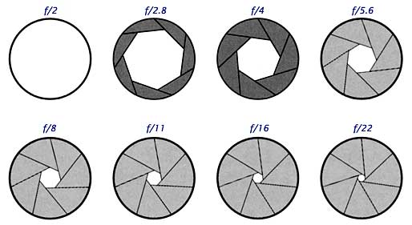

|
第二章,几个必要的名词解释
第一节：图片质量与ISO
第二节：快门
第三节：光圈
第四节：测光，曝光与曝光补偿
第五节：焦距和焦距转换系数
第六节：景深与光圈优先
第七节：白平衡与RAW
----------------------------------------------------------
种田要知节气，开车要懂离合，任何一样手艺都有行话。这本小册子尽量不用行话术语，但有几个词是例外，它们是必须掌握的摄影名词：光圈，快门，
曝光，焦距，
ISO，景深
，RAW。
第一节，图片质量与ISO
ISO是一个曝光率极高的词，刚才我在超市买饼干的时候就看见包装袋上写：本公司已通过ISO9001质量体系认证。这个ISO是国际标准组织的缩写，International
Standards
Organization。国际标准组织制定饼干管理标准，也制订胶卷的生产标准，所以货架上的胶卷有ISO100，200和400的几种，这就是感光速度不同的胶卷。ISO感光度是CCD（或胶卷）对光线的敏感程度。如果
用ISO100的胶卷，相机2秒可以正确曝光的话，同样光线条件下用ISO200的胶卷只需要1秒即可，用ISO400则只要0.5秒。 在数码时代，数码相机的主菜单里都有ISO选择，100，200，400或者800，这和胶卷上的一样。看机型不同，低的到ISO50，最高有到25600的，数字越大越敏感（感光度越高）。
午餐和爱情都流行快餐，什么事都要快点搞，按道理我们应该喜欢高感光度。但世界上没有免费午餐，高ISO虽然速度快但图像颗粒粗，经不起精细放大出图。以前我在商店里经常看到卖胶卷的说：去旅游？兄弟买400的吧，速度越快图片越好！这明显是忽悠消费者。ISO200以上的胶卷
（或数码相机设定高于ISO200）不可拍摄风光，一定要用相机的最低感光度才可得到精细的画面。高ISO一般在万不得已的时候才用。
人在江湖身不由己，万不得已的时候很多，所以高ISO图片质量是数码相机最重要的指标之一。在弱光场合比如昏暗的室内，午夜的街头，ISO100时即使光圈开到最大，快门速度也需1/4秒甚至更慢才能正确曝光，这时不用三脚架是无法把相机端稳的，手一晃照片就糊；就算用三脚架，被摄者一转头照片同样会糊。闪光灯可以救急，但闪灯会破坏现场气氛，人会脸色
不自然，而且相机内的小闪光灯有效距离不会超过四米，稍远的人物和景物就无法照亮了。更何况有些地方是不准使用闪光灯的，如博物馆剧院。我们没有办法只有提高数码相机感光度到ISO800甚至1600。
同样是1000万像素的小数码DC和数码单反DSLR，如果都设置在最低感光度来拍摄（例如ISO100或80），假设镜头的素质相同，它们所拍的图片分辨率是差不多的，图片质量也比较接近。但如果ISO提高到400来拍摄，图片质量的差别就明显了，DSLR拍出来的图像依然干净，和ISO100时所拍差别不大，而DC的图片质量则下降明显，噪点很大，颜色失真，细节丢失。如果继续提高到ISO800，小数码
DC的图片质量就只能用惨不忍睹四个字来形容了，而数码单反的图片质量虽有下降但依然可以接受。如果进一步提高到ISO1600，大部分数码单反的图片质量也下降得厉害，但依然能满足10寸照片的放大需求，而此时小数码DC的图片质量之差，您需要一颗勇敢的心才敢看。
图2-1 数码相机CCD/CMOS感光芯片大小（与35mm胶片对比）
（以下褐色文字略带技术术语，跳过不读并不影响全文完整性)
为什么同是1000万像素数码相机，DC与DSLR在ISO400以上的图片质量差别如此之大？这主要是因为DC与DSLR的感光芯片大小（面积）不同。CCD感光芯片实际上是一个光电转换器，它能把日光的照射转变为脉冲电子信号，把这些电子信号纪录下来就能生成照片。1000万像素的CCD上面有1000万个有效像素点，要得到正确曝光的照片，每个像素点必须要给予一定的光照强度。光圈一定的情况下如果光照时间同为一秒钟
（或者说曝光时间一秒/快门速度1S），面积大的CCD当然接受的阳光多，分配到每个像素点的光照充分，CCD就能正常工作，照片能够正确曝光（图片细节丰富，噪点少，颜色准确）。
小数码DC的CCD面积小，在光线昏暗时如果只给一秒曝光时间，接收光照总量就少，如果这个小数码DC也是1000万个像素点，分配给每个像素点的光照强度就不够了，微弱的光线只能产生微弱的电子信号，所以我们无法得到正确曝光的图片。这时候DC的电子放大电路就开始工作，把微弱的电子信号放大
来得到正确曝光的照片。提高ISO数值实际上是个电子放大处理过程。
这个过程和扩音话筒是同样道理，说话声音小不要紧，音量开大点就行。但扩音机的效用是有极限的，如果把音量开到最大，嘈杂的环境音以及咔咔的电流声也被一同放大，最后导致啥也听不清楚。音响效果要好，首先说话者本人必须声音洪亮才行。同样的，要图片的质量高，CCD也必须面积大，进光量大，数码相机的电子放大效用也是有极限的，因为漫射光产生的干扰和电路杂波也会被一同放大，虽然能正确曝光，但图片的质量很差（噪点多，细节丢失，颜色失真）。
如果以上叙述不好理解，我们来做个简单的算术题。在一个明媚的早上，阳光打在我们脸上，温暖留在我们心里。此时我们假设光线全部是由粒子（光子）构成。典型DSLR的CCD面积为24mmx15mm=360平方毫米，而一般DC的CCD为6mmx9mm=54平方毫米。假设此时的光照强度为每平方毫米每秒100万个光子，小数码DC的54平方毫米CCD一秒钟总计能接收54X100万=5400万个光子，这个CCD是1000万像素的，所以每个像素每秒钟分配到5400/1000=5.4个光子。
同理，DSLR的CCD面积为360平方毫米，一秒钟接收光照总量就是360X100万=36,000万个光子，同样是1000万像素，每个像素上每秒能分配到36个光子。假若每个像素点必需每秒接收36个光子才能正确曝光，DSLR此时不需要启动电子放大电路，而小数码DC必需启动电子放大将弱电子信号放大6.6倍才能让图片正确曝光（5.4X6.6=36），图片质量当然差了。
简单总结：在像素相等的情况下，CCD面积越大，高ISO的成像质量越好。也就是说：在CCD面积一定的情况下，里面增加更多的像素反而会造成图像质量的下降。所以现在的数码相机不应该在1000万像素以上再简单增加几百万像素，而应该在提高CCD质量上下功夫。降低高感光度（高ISO）噪音水平以及增大曝光宽容度才是当务之急。
800万像素已经足够旅游摄影之需，我们在选择数码相机时就不该只看像素高低，而应该注意相机CCD的大小。现在是2008年，解像度已经足够，该是重点关心图像质量的时候了。
第二节：快门
在摄影术最初发明的那些年，拍张照片曝光时间一般都需要好几分钟，大部分照相机是不需要快门的，开始曝光的时候把镜头盖取下，然后看表，五分钟后盖上，照片完成。
后来，胶片的感光速度越来越快（ISO越来越高），曝光时间变为一分钟，几秒钟，1/10秒甚至几百分之一秒，这时候用手取镜头盖就不够快了。我们需要一个能准确控制曝光时间的东西，这个东西就是快门。 快门有机械快门，电子快门，以及电子机械联合快门等很多种类。
定义：快门就是相机里控制曝光时间的装置。
这里顺便介绍一下安全快门速度。在使用135相机拍摄的时候有一个
手持相机拍摄的安全速度原则：安全速度是焦距的倒数，如果使用35mm镜头，快门速度不得低于1/35秒，使用200mm镜头时速度不得低于1/200秒，否则图片就可能糊了。
第三节：光圈
上一章说过，所有相机都基于小孔成像原理：拿一个密封箱子，在任何一面钻个小圆孔，然后把有孔的这面对着窗外，窗外的景象比如一棵树什么的，就会在圆孔对面的箱内壁生成此树的倒影。假如我们在内壁涂上感光材料（装上胶卷或CCD），这个有孔的箱子就是一台完整的照相机了。这就是针孔相机。
既然一台照相机可以不需要镜头，为什么现在的相机前面不是一个小圆孔而是几块玻璃呢？而且这几块玻璃（镜头）还卖得那么贵！这是因为小孔要成像的话，孔必须很小，这也是针孔相机名称的来历。如果孔开得和门一样大，这个孔就成不了像。所以我们没有小门成像一说。孔小进光量就小，所以玩针孔摄影非常锻炼人的耐心，一张照片曝光几分钟到几个小时都常见。而且，由于光的衍射干扰，针孔相机拍的图片都不够清晰，如雾里看花一般。
没有人原意花几个小时去拍一张模模糊糊的照片，我们要想办法加大进光量。有什么办法能够把这个小孔开大而又能生成清晰的图像呢？人们马上就想到了凸镜的聚光功能。把玻璃凸镜装到大孔上，问题不就解决了？
确实如此。相机镜头就是这样诞生的。今天数码相机的各种镜头都是几块凹凸镜的排列组合，然后外面用塑料或铁皮一包。有了镜头，小孔成像的这个孔
–
也就是下文中的光圈
–
就不再是针孔了，它变成了洞。
洞变大了，进光量问题解决。但有时候问题又来了：我们并不是任何时候都需要大洞。比如夏日沙滩上烈日当头，四处白花花一片，为了分清到底是人肉还是白沙，我们需要眯着眼睛仔细观察。镜头是照相机的眼睛，这时候相机也需要眯起眼睛。很显然，为了应付不同的光线强度，我们还需要给镜头装上能够调节这个洞的大小的装置，以便在强光时缩小为针孔，弱光时开成大洞。这个装置就是光圈。光圈英文名称为Aperture。一组凹凸镜再加上光圈就诞生了完整的镜头。
定义：光圈就是镜头里调节进光孔大小的装置。
常见的光圈值如下：
F1，
F1.4，
F2，
F2.8，
F4，
F5.6，
F8，
F11，
F16，
F22，
F32，
F44，
F64。每两挡相邻光圈值之间进光量相差一倍。例如光圈从F4调整到F2.8，进光量便多一倍；从F2.8到F2又多一倍。也许您已经看出来了，光圈值和光圈实际大小是相反的，进光量最大时光圈为F1，最小时为F64。
对135相机来说大多数镜头的最小光圈为F22。
图2-2：光圈值与光圈大小示意图

既然光圈可大可小，那多大的时候镜头的成像质量最好？根据上图，最小光圈F22时光圈跟针孔差不多，数码相机成了针孔相机，前面说过针孔成像好不了；光圈最大的时候小孔又变成了大门，成像也差。所以，根据中华民族传统的中庸之道，请牢记：
重要结论：镜头在中等光圈的时候成像最好（图片最清晰）。
如果是135数码单反，中等光圈为F8或F11。小数码DC要看具体机型，如果可选光圈值在F2.5到F8之间，中间的F4.6为最佳光圈。
假如光阴似水，镜头的光圈就是水龙头，它控制着水流（进光量）的大小。
对于镜头我们当然是希望它的光圈越大越好，这就如同家里的水龙头，虽然平时我们刷牙洗脸从不把它开最大，但万一有一天家中失火，我们会立即把龙头拧到最大，并且痛恨当初为什么没有装一个大点的水龙头。一个镜头最大光圈时成像并不好，平时我们一般少用最大光圈；但在特殊弱光又不准使用三脚架的情况下，比如深夜的街头纪实抓拍，我们一定会毫不犹豫地使用最大光圈，并且后悔当初为什么没买一支大光圈镜头。
但大光圈镜头的价钱很贵，重量惊人。比如Canon70-200mm有两个版本，光圈为F4的售价人民币六千元，重700克；光圈为F2.8的那一款售价近一万元，重达1500克。这是因为光圈大一级，镜片就大很多，加工难度大。是否值得为大一级光圈多付出一倍的钱和负重的汗水，这是一个见仁见智的问题。
第四节：测光，曝光与曝光补偿
为了讲清曝光这个词，我们还是回到小孔成像。假设一个黑乎乎的密闭房间，一面墙壁上开了个小圆窗户，窗对面的内壁上安上感光材料（白沥青，大型胶卷或CCD）。这就是一台大型房式照相机。在没有打开小窗之前，房间里是黑乎乎的。
上帝说：要有光。于是我们打开小窗，光线从小孔而入，射到对面墙壁的胶卷上，产生光化反应（或光电反应，如果是CCD），照片就诞生了。此过程就叫做曝光。要得正确曝光的图片，必须精确决定曝光量。所谓曝光量就是让多少光进入这个密闭房间里。如果进光量太大，照片就会白花花一片，晚上变成了白天。如果进光量太小，照片就会黑乎乎的，白人变成黑人。
幸好我们有了光圈和快门两样工具可以一起来控制曝光量。曝光就是光圈和快门的组合。可以这样认为：光圈（值）大小其实就是那个小圆窗户开多大，快门（速度）就是窗户打开多久。假设窗户只打开1/4，时间为4秒钟可以正确曝光的话，很显然，窗户打开一半，时间2秒钟也能让底片正确曝光，因为1/4*4=1/2*2=1，进光量都是一样多。同样的，如果窗户全开，曝光时间就只需要1秒了。
假若一个镜头光圈全开为F4，用摄影行话来说，光圈F4快门速度1秒为正确曝光值，那F5.6和2秒以及F8和4秒也同样能得到准确曝光的图片。
重要结论：一张正确曝光的图片可以有N种不同的光圈和快门速度组合。
总结以上几个名词解释，有三个因素能影响一张图片是否正确曝光：光圈，快门速度，ISO。其中光圈和速度联合决定进光量，ISO决定CCD的感光速度。如果进光量不够，我们可以开大光圈或者降低快门速度，还是不够的话就提高ISO。大光圈的缺点是解像度不如中等光圈，快门速度降低则图片可能会糊，提高ISO后图片质量也会下降
。没有完美的方案，如何取舍要灵活决定。
测光与测光模式
曝光和测光是一对双胞胎，如果不能准确测定光照强度，正确曝光就无从谈起。1965年以前绝大多数相机都没有机内测光装置，拍照时要另外携带笨重的测光表，或者靠经验来估计光照强度。现在所有的数码相机都内置测光表，它能测量光线的强度，自动给出能正确曝光的光圈和快门速度，大大降低了摄影的技术门槛。
相机是如何实现自动测光的？原来每个数码相机里都有一个光敏电阻（不同强度的光线照射时电阻值发生变化），相机内的电脑根据电阻值的变化确定光线强度，进而确定曝光值（光圈，快门）。
测光模式主要有点测光，中央重点测光，区域（平均）测光三种。点测光只测取景框内一个小点的光线强度（此小点大约为取景框面积的10%到1%，看不同机型）。区域（平均）测光则把取景框分为5到63块（看机型不同），分别对每块测光然后再加权平均得到光照强度。中央重点测光是简化的区域（平均）测光，只把取景框分为中央圆圈和四周两块，分别测光，然后加权平均（中央圆圈的权重为70%左右）。
根据什么情况来采用不同的测光方式？大多数情况下用区域测光即可。在光线明暗反差很大时应该采用点测光。用区域（平均）测光或中央重点也可以，你可根据自己的艺术创意进行曝光补偿。
曝光补偿（exposure compansation）
到底怎样才算是正确曝光？这个问题没有绝对准确的答案。总原则：照片要能真实反映拍摄时的环境亮度。如果一张正午户外的照片被拍得昏暗如夜，这张照片就曝光不足，反之则是曝光过度。曝光是否准确是根据日常生活经验判断的。
相机自动确定的曝光值90%以上是正确的，但也有不准的时候，典型的例子是雪景，本来应该雪白刺眼的场景拍出来却是一片灰色；再比如对着一堆煤球拍，本来是纯黑，拍出来却是灰煤。这种失误根源在于相机的反射式测光原理。

图2-3：18度中间灰（柯达灰卡） |
我们之所以能看见东西，不外乎两种情况：一是物体本身可以发光，比如太阳或灯泡；大多数情况是物体能反射外来光线。反射的光线越多，物体就越亮，反之则越暗。假设两个极端，纯黑色物体不会反射光线，反射率为零，而纯白的物体反射率是100%。在这两个极端之间取中间值就是不黑也不白的灰色，称为柯达灰，也称为18%中间灰。
以一张客厅照片为例，客厅墙壁又白又亮，而电视机的大屏幕又黑又暗，窗帘和家具等亮度居中。要以谁的亮度来确定曝光？相机自动测光就是取平均数，最后给出一个让图片达到中间灰的曝光值。
相机内部的自动测光电脑是个死脑筋，它认为全世界所有场景的平均亮度都是18%中间灰。好在大部分生活场景都是明暗交织的，平均起来差不多是灰色，所以大多数情况下自动曝光自动测光都相对准确。但在雪景这样的纯白场景（或者煤球等纯黑场景）时，相机依然会给出中间灰效果的曝光值，拍出来就会白雪成灰雪，煤球成灰球。此时我们就要对自动曝光值予以修正，对雪景增加曝光，煤球减少曝光，这样才能拍出亮度和色调正确的照片。修正（增减）曝光值就叫做曝光补偿。
曝光补偿的原则：白加黑减。如果构图中有大片白色物体或者有灯等特别明亮的物体，就要相应增加曝光量（增大光圈or/and减低快门速度）；如果取景框中有大片黑色的物体，则要减少曝光量。
一般来说，在光照比较平均的情况下相机的自动测光和曝光比较准确，但在明暗反差很大时自动曝光往往不准，需要手动暴光补偿。
之所以需要曝光补偿，是因为相机的小电脑虽然聪明，但还没有聪明到能判断物体到底是什么，如果有一天电脑能辨别出白雪，茶杯，或者煤球，那也就不用人脑来补偿了。不过就算
相机能认识物体，在进行艺术创作时还是需要曝光补偿，例如我今天心情不好，想故意把明亮的世界拍得灰暗些；又比如我想故意增加曝光量，把一个深色皮肤的妹妹拍得白白的。这些事情相机的电脑永远学不会，因为它不懂我的心，所以我们永远需要补偿。
在胶片时代，精确测光和曝光是极其重要的，
负片底片一旦曝光不足，色彩就非常难看；而反转片一旦过曝一档（1EV），其色彩和层次就消失大半，更何况只有在底片冲印后才知道曝光是否准确。在数码时代曝光的问题变得简单了，拍完之后可以立即回放，曝光不准可以马上改，而且如果图片以RAW格式存储的话，其抗过曝/欠曝能力是很强的，只要没有曝成完全没层次的一片纯白，过曝/欠曝一个EV之内的照片都能在后期电脑处理时调正，而且基本不漏痕迹。但过曝/欠曝太多还是不行，如果相差2EV以上，调正后的图片也会很难看。所以掌握曝光补偿白加黑减的原则依然重要。
 |
图2-4/5：曝光补偿的操作（以Canon
400D为例）：按下Av+/-按钮（左图），然后转动快门旁边的主转盘即可。下图是400D的显示屏，第二排Av不是光圈优先，这里AV代表曝光补偿，400D可以正负各补偿两档（共四档，从+2到-2），以三分之一档为调整单位。 |
 |
第五节：焦距与焦距转换系数（focal
length multiplier)
光线经过透镜就会聚成一点（焦点）
，镜头的焦距就是从镜片（或镜片组）的中心到底片(CCD)的距离，单位是毫米（mm）。对全幅135数码单反相机以及我们以前常用的135胶卷相机（使用超市里的盒装胶卷）来说，焦距50mm的镜头称为“标准镜头”，简称标头，拍出来的照片类似肉眼平视的感觉（视角为45°左右）。
严格的定义是：标准镜头就是焦距等于底片（或CCD）对角线长度的镜头。单张135底片是24x36mm，根据勾股定理计算，其对角线长度为43mm，所以135画幅的标头应该是43mm。在实际应用中我们把焦距为40-60mm的都称为标头。早期的单反相机是与50mm镜头捆绑销售的，这也许是称其为“标准镜头”的原因吧。
广角镜头（焦距小于35mm）能够让照相机“看得更宽阔”，因为它视角大；长焦镜头（焦距大于70mm）能让照相机“看得更远”，但视角窄。长焦镜头也称远摄镜头或望远镜头。从焦距的定义就可以推断出，广角镜头都身材矮小，长焦镜头都高大威猛。以后我们只要一看到那些又粗又长的大家伙，不用说那都是长焦头。
焦距固定的镜头即定焦镜头。1960年以前，变焦基本靠走。1965年之后，焦距可以调节的变焦镜头开始大量上市。变焦镜头的优势是明显的，改变焦距不用再走路，只需转动镜头筒。但变焦需要一套复杂的光学系统（其内部结构大多超过十片镜片），这给变焦镜头带来了
两个问题:
1，体积和重量大; 2，成像往往都不如最好的定焦镜头成像清晰。
光学变焦与数码变焦
我们经常看到数码相机广告上写XX倍光学变焦。这里的变焦倍数＝最大焦距值/最小焦距值。一个28-280mm变焦镜头的光学变焦倍数就是280mm/28mm，即10倍。光学变焦英文名称为Optical
Zoom，它依靠镜片的位移来实现焦距的改变。光学变焦倍数越大，里面的镜片就越多，镜头体积相应较大，画质相对较低，光圈相对较小。
光学变焦并不是越大越好。一般来说，只要愿意花大价钱认真设计精心制作，以目前的技术水平，光学变焦比在4倍以内的镜头其光学素质才有可能接近或者达到定焦头的平均水准，比如佳能Canon
70-200mmF2.8IS镜头（市价两千美元，重1.5公斤）。超过4倍变焦的镜头其光学素质基本不可能达到定焦头的水平。
1995年以来市场上陆续出现了10倍以上的大变焦镜头，光学变焦越大当然越方便，但成像也会相应下降。2007年底上市的Panasonic松下FZ18数码相机其光学变焦为28-504mm，达到了不可思议的18倍，但实测这款相机的镜头边缘解像度相当差，看来18倍已经接近光学变焦目前的技术极限了。
关于数码变焦我只有三个字：骗人的。数码变焦只是电子放大，软件稍作改动就可以从一倍到一万倍变焦任君自取。只有光学变焦才是真正的变焦，数码变焦是厂家用来欺骗外行消费者的。
以下是135镜头对应焦距说明：
表2-1：焦距与135相机镜头的分类
|
焦距 |
镜头类型 |
视角 |
备注 |
|
小于20mm |
超广角 |
大于95度 |
适合拍摄建筑与风光 |
|
20-35mm |
广角 |
95-63度 |
适合拍摄建筑与风光以及街头抓拍 |
|
50mm |
标准镜头 |
45度左右 |
具有F2以上的大光圈，便宜量又足 |
|
70-300mm |
长焦 |
34-8度左右 |
适合拍摄远距离物体。其中85-135mm焦距段适合拍摄人像 |
|
大于300mm |
超长焦 |
小于8度 |
适合拍摄超远距离物体比如野生动物 |
值得注意的是：一个镜头是不是标准镜头（标头）不是看它的焦距而是看它的视角，视角45度的就是标准镜头。对120相机来说80mm焦距镜头才是标头。在数码时代，对Nikon
D40x等小CCD的数码单反来说，33mm焦距的镜头就是标头。
镜头的焦距转换系数
在数码时代的2008年，只有极少数售价昂贵的顶级数码单反CCD才与原35mm胶片一样大（36x24毫米），绝大部分数码相机CCD面积都比原胶片小，由此产生了镜头焦距转换系数的概念。Nikon非全幅DSLR的焦距转换系数均为1.5，也就是说原来135相机的镜头安装到D40，D80，D300等数码单反上，其焦距要乘以1.5，50mm的标头变成了75mm，200mm的变成300mm，以此类推。
之所以有焦距转换系数这个东西，是因为我们几十年来习惯了135相机和35mm胶卷的世界。如果以前几十年胶卷一直就是nikon
D40x的CCD那么小，现在我们完全可以不需要所谓的转换系数而直接把33mm焦距镜头叫做标准镜头，因为它的视角是45度。在胶片时代我们的世界是很简单的，除了少数专业人士用120和大画幅相机，绝大多数人都使用135相机。表2-1关于镜头焦距的分类就是针对135相机和35毫米胶卷来说的。几十年来我们往往把50mm焦距，标准镜头以及45度视角这三者等同起来。
进入数码时代以来，这个观点是不对的，或者说不完全对，因为只有在CCD面积与35毫米胶片一样大的时候，焦距50mm的镜头才依然是视角为45度的标准镜头。如果焦距不变，CCD面积变小，镜头的视角也会变小，因为镜头的视角是由镜头焦距和胶卷（或CCD）尺寸两者联合决定的。参见下图：
图2-3：焦距，CCD尺寸，视角三者的关系

图中focal length就是焦距，angle of view就是视角。根据上图可以推论：假如焦距不变，CCD越小，镜头视角越小。Nikon
D40x数码相机CCD的对角线长约为原35mm胶片的2/3，如果镜头焦距保持50mm不变，我们发现视角从原来的45度变成了30度。如果要保持45度的视角，
则需要把焦距缩短为33mm。也就是说，33mm镜头的成像因为CCD变小而与原来50mm镜头的成像一致，等于是33mm镜头变成50mm的了。我们就把这50/33=1.5称为镜头的焦距转换系数，它的计算公式为135胶片与非全幅DSLR的CCD对角线长度之比。
因为不同品牌型号的数码单反CCD大小不一（有APS-H画幅、DX画幅、APS-C画幅和3/4系统等），所以焦距转换系数也不同。CCD面积越小，其焦距转换系数越大。SONY和Pantex宾德非全幅DSLR的镜头焦距转换系数与尼康一样为1.5。
佳能40D和400D系数为1.6，Sigma SD14系数为1.7。奥林巴斯Olympus
E3，E410，E510和松下Panasonic
L10等3/4系统的数码单反镜头转换系数为2。
值得注意的是，有的人看到原200mm镜头在非全幅数码单反上变成了300mm，就说数码单反像增倍镜一样拉长了镜头的焦距。这个说法是错误的。数码单反并不是增倍镜，只是因为CCD面积小，成像就如同在原135胶卷相机的36x24mm面积上截取了中间部分，这个中间部分和原300mm镜头的成像范围是一致的。虽然成像范围一致，但数码单反使用300mm镜头的效果并不完全等同于全幅相机使用200mm镜头的效果，例如它们对景深的影响就不一样，也就是说镜头转换系数只影响视角
。
同是50mm焦距，CCD尺寸一变，镜头的视角大不相同。进入数码时代以来，我们的世界变得复杂起来，因为数码相机CCD从24x36mm到黄豆大小的1/2.5英寸甚至更小，足有十几个不同的规格。以前用35mm胶卷的时候，只要一看焦距就知道视角大小，现在的CCD五花八门，光看镜头焦距不知道CCD大小，我们无法得知视角范围。为了让大家回到那难忘的看焦距知视角的35mm胶卷时代，现在数码相机说明书在实际焦距后面都会注明“相当于135相机xx-xxx焦距”，有的干脆实际焦距都不写了，直接在镜头上标注这个“相当于135的xx-xxx焦距”，这样大家就好理解了。
 |
|
认识单反镜头前面那一圈字
CANON ZOOM
LENS：佳能变焦镜头
EF-S代表小CCD数码单反
（其CCD尺寸为APS单张底片大小）专用镜头（焦距转换系数为1.6），EFS镜头不能用在佳能传统胶卷单反
及其全幅CCD数码单反上。
18-55mm
代表变焦范围18-55毫米（乘以焦距转换系数1.6后相当于135传统胶卷单反焦距28-88mm）
1:3.5 -
5.6：此镜头在最小焦距18mm时最大光圈为F3.5,
在最大焦距时最大光圈为F5.6
CANON INC.
代表佳能公司
Ø58mm表示镜头滤色镜口径为58毫米 |
| |
|
 |
佳能A650IS小数码DC该机镜头变焦范围为7.4
- 44.4毫米，在最小焦距7.4mm时最大光圈为F2.8,
在最大焦距44.4mm时最大光圈为F4.8
IS为Image Stabilizer,
表示此镜头内有图像稳定器（镜头防抖）。6x表示6倍光学变焦，44.4/7.4 = 6
该镜头相当于35mm照相机35-210mm焦距，由此可得该镜头焦距转换系数为4.73，计算如下210/44.4=4.73=35/7.4
单张135底片对角线长度为43.3mm，若焦距转换系数为4.73，我们得出该机CCD对角线长度为43.3/4.73=9.15毫米，真的是非常小啊。 |
第六节：景深与光圈优先
通俗地说，景深就是照片焦点前后延伸出来的“可接受清晰区域”。相对于光圈和快门，景深比较难理解，因为它是一个基于主观判断的概念。清晰还是不清晰并没有绝对客观的标准。
还是打比方吧：一张合影，如果对焦准确，一排人的脸部都很清晰，但人群前面的鲜花和人群后面的建筑物就比较模糊。这张照片的清晰区域只限于人群，我们就称此照片景深较浅（小）。如果用F22最小光圈来拍合影，除了人物清晰，人群前的鲜花和后面的建筑物也比较清晰，照片的清晰区域很广，我们就说此照片景深很大。
风光摄影一般需要大景深，因为我们希望景物的前前后后都清楚。人像摄影一般需要小景深，我们只希望美女的脸部清楚，此美女四周的树枝和丑男最好都模糊，这样才能够突出主体。景深直接关系到图片能否吸引人。
景深是由三个因素决定的：1，光圈大小；2，焦距长短；3，被摄物体的远近。所以在相机上并不能直接调整景深，只有景深预览按钮，小数码DC和有些入门级单反连景深预览按钮也没有，一切要靠估计。好在掌握了几个原则后，估计景深并不难。这三个原则是：
1，光圈越大，景深越小；
2，焦距越长，景深越小；
3，离被摄物体越近，景深越小。
光圈越大景深越小指的是实际光圈大小。第三节我们说过，光圈值和光圈实际大小是相反的，如果不记得，请回头看看图2-2。对135相机来说大多数镜头的最小光圈为F22，这时候景深最大（如果焦距和拍摄远近不变），在F2.8的时候景深最小（如果此镜头最大光圈是F2.8）。
焦距越长景深越小这个好理解，广角镜头景深大，长焦镜头小。实际上17mm的超广角镜头如果使用F8以下的中小光圈，随便你朝何处对焦，拍的照片前前后后景物都清晰。相反，200mm或更长的镜头景深很小，一定要仔细小心对焦，如果可能最好在三角架上拍摄，这些望远镜头本来视角就小，很难端稳，稍不留神焦点就跑到九霄云外去了。
离被摄物体越近，景深越小。如果你凑得足够近拍小狗的脸，有时候鼻尖清楚眼睛却模糊，这种景深就非常小了。所以在很近距离拍摄的时候要特别小心对焦，例如用微距镜头拍花花草草时。
既然景深这么重要，我们一定要摸清上述三个因素对景深的影响，在不同的焦距段用不同的光圈各拍几张，马上回放看看，熟悉图片的景深变化。最后要做到烂熟于心，不用相机的景深预览按钮，只要一看焦距和光圈就知道图片的景深。
---------------------------------------------------------------
到这里我们终于可以回头再谈谈光圈了，它是摄影里最重要的一个词。光圈有三个作用：
1，控制进光量，这直接影响到图片是否能正确曝光，是拍摄成功与否的关键；
2，控制景深，光圈越小，景深越大。虽然焦距和拍摄远近都影响景深，但焦距和被摄物远近的改变同时也会影响构图，如果构图确定，我们能控制景深的武器就只剩下光圈了；
3，光圈影响图片的清晰度，任何一个镜头都是在中等光圈的时候成像最好（图片最清晰），在最大光圈和最小光圈的时候解像度差。
所以光圈这个家伙对图片的影响真是太大了，牵一发而动全身。前面我们说过，一张正确曝光的照片可以有好几种不同的光圈和快门速度的组合，如何选择就要看你的拍摄意图了，如果你要最小景深，那就设置F2.8最大光圈；如果你要最大景深，那就直接设置F22最小光圈；如果你要解像度最高，那就设置F8中等光圈。
由此我们引出摄影最重要的一个概念：光圈优先。光圈优先就是手动定义光圈的大小，相机会根据这个光圈值确定能正确曝光的快门速度。光圈优先的英文是Aperture
Priority，相机主转盘上大写的A或者Av就代表光圈优先拍摄模式。
曝光是光圈和快门的组合，光圈优先对应的概念就是快门速度优先，简称快门优先。快门优先就是手动定义快门速度，相机会根据这个快门速度确定能正确曝光的光圈大小。相机主转盘上T或者Tv就代表速度优先拍摄模式。在某些时候快门速度是一张图片能否吸引人的重要因素，比如要定格运动员冲刺撞线的瞬间，快门速度最好在1/500秒甚至更快；如果要把流水拍得如丝般柔滑，快门速度需要在0.5秒或者更慢。
 |
图2-6：Canon佳能A650主转盘，Av和Tv代表光圈优先和快门优先 |
 |
图2-7：Canon佳能400D主转盘，Av和Tv代表光圈优先和快门优先 |
第七节：白平衡与RAW
要了解白平衡white
balance就必须先了解另一个概念：色温color
temperature。所谓色温就是以开尔文温度表示光线的色彩，单位是K。当物体被加热到一定的温度时就会发出光线，此光线不仅含有亮度的成份，更含有颜色的成份，温度越高，蓝色的成份越多，图像就会偏蓝；相反，温度越低，红色的成份就越多，图像就会偏红。光线的色温举例参见下表：
表2-2：光线的色温
|
光源 |
色温（Ｋ） |
|
蜡烛 |
2000 |
|
钨丝灯 |
2500-3200 |
|
荧光灯 |
4500-6500 |
|
日光（平均） |
5400 |
|
有云天气下的日光 |
6500-7000 |
物体在不同色温的光源照射下会呈现不同的色调，在日光灯下整体偏白，在普通钨丝白炽灯下整体偏黄。白平衡就是照相机对白色的还原准确性。大多数情况下数码相机能准确判断光源的类型，拍出的照片颜色准确，但也有时候相机的电脑对色温做出了错误的判断，拍出的照片颜色惨不忍睹，严重偏蓝或发黄。这时候我们就要手动设置白平衡。中档以上的小数码DC和所有的数码单反DSLR都能在菜单里选择色温。
但万一人脑也判断错误怎么办？要彻底解决白平衡和色温准确性的问题只有一个方案：选择RAW图片存储格式。
高档小数码DC和所有DSLR都有图片存储格式选择。相对于Word文字文档，图片文件都巨大无比，典型的一千万像素数码照片如果以不压缩的TIFF格式存储，一张可能超过25MB。如果相机存储卡是1G（约1024MB），一张卡只能拍40张。所以不推荐TIFF存储格式。我们需要把巨大的图片文件压缩以便一张卡能存储更多照片。现最常用的图片压缩存储格式为JPEG，同样是一千万像素的照片，以JPEG存储一张1G的卡往往能拍100多张。
 但JPEG是一种有损压缩，拍两张一样的照片分别以TIFF和JPEG格式存储，你会发现JPEG图片丢失了某些细节。大部分相机都有图片质量选择，这实际上就是JPEG压缩比的选择，压缩得越厉害，文件越小，一张卡能存储更多照片，但细节丢失更多。 但JPEG是一种有损压缩，拍两张一样的照片分别以TIFF和JPEG格式存储，你会发现JPEG图片丢失了某些细节。大部分相机都有图片质量选择，这实际上就是JPEG压缩比的选择，压缩得越厉害，文件越小，一张卡能存储更多照片，但细节丢失更多。
图2-8：Canon佳能400D显示屏上的图片画质调整菜单。
数码相机内部都有一个小电脑，CCD经曝光产生电子图片信号，相机内的小电脑把这些电子信号进行加工处理，再传输给存储卡。这些加工处理包括白平衡配置，颜色饱和度的增减，图片锐度和对比度增减，降低图片噪点等等，最后压缩转换为JPEG格式进行存储。
RAW英文是原始的意思，这很好地说明了RAW图片的特点：它是原始的，CCD经过曝光产生的图片电子信号直接传给存储卡，文件没有经过相机内部电路的任何图片参数和质量处理。所以RAW文件又被称为数码底片Digital
Negatives。其实准确地说RAW文件也经过了压缩，但这是一种无损压缩，后期在电脑上可以准确还原，没有一点细节丢失。我们回家后在电脑上可以给RAW图片任意配置色温（彻底解决白平衡问题），调整图片的颜色，锐度，对比度，曝光补偿等等，可以这么说：RAW格式的图片几乎所有的参数都可以后期在电脑上调。桌面电脑比相机内的小电脑强大得多，我们后期手工精心处理RAW而转换成的JPEG图片肯定漂亮。
这个世界当然没有完美的事，RAW文件最大的问题和TIFF文件一样，太大了。虽然通常比TIFF稍小一点，但还是比JPEG大两倍以上。好在2008年的存储卡都卖成了白菜价，2G的卡才人民币一百多，问题不大。RAW文件第二个问题就是后期处理比较费时间。如果出门旅行十来天拍了上千张RAW图片，后期处理会让人头变得巨大。还好现在很多相机都可以同时存储JPEG和RAW，如果JPEG图片看起来还可以就不用处理RAW文件了。但同时存储JPEG和RAW，文件不是更大？唉，没办法。所以我最后的建议就是：重要图片的拍摄一律存储JPEG+RAW，一般的图片存JPEG.
---------------------------------------------------------------
本章结束语
这不是一个完美的世界，很多事情无法兼顾，比如高ISO和图片质量，
高倍变焦与图片质量，RAW和图片文件大小。如果你要求最大景深的同时图片解像度也要最高，这也是一个不可能完成的任务，因为最大景深要求光圈F22，而最高解像度需要F8的光圈。
在以后的实际拍摄中这样的矛盾还会有不少，如何取舍？这时只能确定哪个目标是最重要的，如果景深最重要，那就要毫不犹豫的选择F22。我们必须要学会取舍，确定主要目标，忘记其他目标，然后坚决按下快门。
人生就是选择，选择就是妥协。
第二部分完，请点击以下链接继续：
|